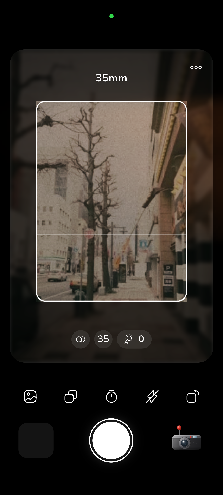

Triangulation Physics and the Geometric Baseline
Unlike Single-Lens Reflex (SLR) cameras that view the world through the shooting lens via a swinging reflex mirror, a rangefinder operates as an autonomous optical triangulation instrument. The mechanism relies on two separate windows positioned along the top plate of the camera: the primary viewfinder window on the right and a secondary rangefinder window spaced several centimeters to the left. The linear distance between the centers of these two entrance apertures is defined as the physical baseline (b).
When light rays from a subject enter both windows simultaneously, the ray entering the secondary window is reflected across a rotating mirror or pivoting glass prism directly toward a semi-transparent beam-splitter located in front of the photographer's eye. By mechanically coupling this pivoting mirror to the helical focusing ring of the taking lens via a hardened cam follower arm, the device constructs a precise right-angled triangle where the subject's physical distance (D) is calculated by the angle of optical convergence.
Effective Baselines and the 50mm f/1.4 Focusing Threshold
The mechanical accuracy of any rangefinder camera is governed by its Effective Base Length (EBL), calculated by multiplying the physical distance between windows by the optical magnification factor of the viewfinder eyepiece (EBL = physical baseline × magnification). A wider baseline coupled with high eyepiece magnification generates a greater angular displacement for the split image, allowing human ocular vernier acuity to resolve microscopic discrepancies in focus.
For high-speed portrait lenses such as a 50mm f/1.4 or 75mm f/1.4 wide open, where the depth of field at 1 meter is thinner than a fingernail, an EBL exceeding 55mm is mathematically required to guarantee critical focus. If the rangefinder cam arm is misaligned by even 5 microns due to an impact or worn lubricant, the coincidence patch will report perfect alignment while the actual focal plane drifts several centimeters behind the subject's eyelashes.
Translating Mechanical Triangulation into Touchscreen Software
Building RfCamera meant solving a fundamental philosophical question: how do you honor the visceral tactility of a mechanical rangefinder on a smooth smartphone screen? We rejected flat digital autofocus squares in favor of recreating the actual spatial experience of looking through optical glass. Outside the 35mm frame lines, the scene remains visible but subtly dimmed and softly blurred, allowing photographers to monitor emerging human drama before it steps into the frame.
When adjusting the manual focal tray (26mm / 35mm / 50mm), the interface triggers fine micro-haptic clicks timed to the virtual helical teeth, while the acoustics replicate the quiet, breath-like sweep of a rubberized cloth focal-plane shutter, returning intentionality and contemplative joy to mobile image-making.
